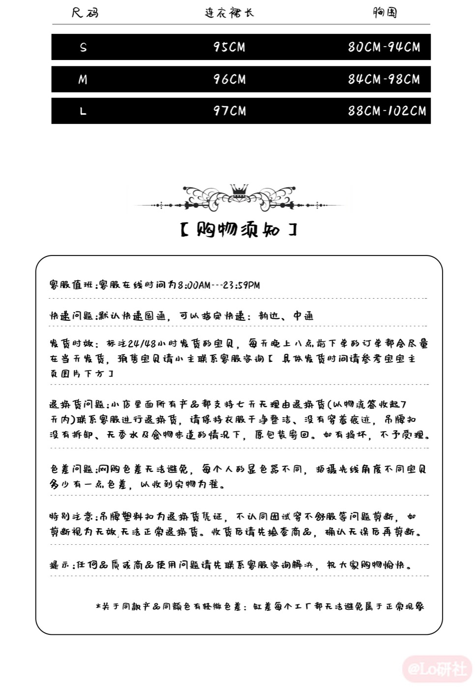

零售页评价／批次与独立性未核
海外零售页有作者认可外观与商品图接近及质量；是个体自述，未独立核实购买与批次。
查看对应来源 ↗商品1006763616986，粉色M码三个组合
SKU展示价已核

补核10月28日已存零售规格：Pink JSK Only / M，USD 46.99；零售商说明肩带可调、背部抽褶、无拉链及腰结可拆，建议45厘米裙撑；不把建议裙撑长度当实测合身条件。 原店批次、实付及独立实穿缺口保留。
“有记录”表示取得对应资料，不等于原店现行批次或实物已全部确认；日期：2026-10-30。
| 核查项 | 状态 | 结果与适用范围 |
|---|---|---|
| 款式与版本 | 部分有据 | 主链接1006763616986已锁；985874514171关系未知。O05 ↗ O06 ↗ |
| 商品与店铺入口 | 有记录 | 主链接三组粉M SKU已稳定读到，保留各自ID。O06 ↗ |
| 价格与包含物 | 有记录 | 10月30日复用恢复检查的1006763616986粉M单裙219.88、有货；加背结260.88及三件套293.88保留10月27/24日，未称当日全套价格。O06 ↗ A27V ↗ A27V2 ↗ A30V ↗ |
| 面料与里料 | 部分有据 | 零售商写Polyester；丝绒是款名，未核纤维比例、里料或克重。R02 ↗ |
| 厘米尺码 | 有记录 | 转载S/M/L表与零售页相同；原店现行团次仍须对应。T03 ↗ R02 ↗ |
| 销售与交期 | 有记录 | 10月30日粉M单裙显示有货、商品页写24小时；逐SKU交期未列。10月24日24小时/15天记录继续保留日期。O06 ↗ A27V ↗ A30V ↗ |
| 穿着反馈 | 部分有据 | 海外质量/等待体验不一；国内同批次实穿仍缺。R02 ↗ |
对应资料 · T03 ↗ 核读：2026-10-25
此图来自款式图鉴附件；未取得淘宝当前团次确认。
| 尺码 | 裙长 | 胸围 |
|---|---|---|
| S | 95 | 80–94 |
| M | 96 | 84–98 |
| L | 97 | 88–102 |
梦呓蝶图说明后背松紧可拉伸、手量误差2–3厘米；丝绒甜心图未给同样误差说明，均未实测。

对应资料 · R02 ↗ 核读：2026-10-30
复用10月28日已保存公开HTML及product.js，本日没有再次请求零售页。字段属于该零售渠道和旧观察日，不作为今天原店SKU、实付、库存数量或同批次确认。
| 完整选项 | USD展示价 | 零售SKU | variant ID | available |
|---|---|---|---|---|
| Pink JSK Only / M | 46.99 | LOL-DRE-330705 | 47068030206126 | true |
未进行加入购物车、结算或订单验证；美元报价不折算为淘宝人民币价，available不保证当前仍可购买。
42Lolita · Velvet Sweetheart ↗
零售页品牌标注：Sugar Girl · 读取日期：2026-10-28
以下为独立零售商提供的参考资料。相同图片只建立款式资料对应，不证明授权关系、同批次或当前淘宝SKU一致；材质尚无原店洗标复核，尺码不替代试穿。
原淘宝所选粉色单裙照片在零售页中出现；红白/粉/白配色及拖尾、头纱组合相符。
材质陈述：零售页写Polyester（聚酯纤维），未给比例、里料、克重；款名“丝绒”仍不构成成分证明。
包含物与分售：红白、粉、白各有单裙、加拖尾蝴蝶结、加头纱、头纱加拖尾组合；按选项区分，裙撑需另配。
| 尺码 | 裙长 | 弹性胸围 |
|---|---|---|
| S | 95 | 80–94 |
| M | 96 | 84–98 |
| L | 97 | 88–102 |
单位：厘米。原页说明为平铺测量，可能有2–3厘米误差；弹性胸围/腰围按原表记录。当前淘宝批次是否使用同表仍待核。
Pink JSK Only / M：USD 46.99；零售SKU LOL-DRE-330705。
正文分现货7–10个工作日、预售30天；未逐项确认选定组合适用分支，不覆盖原淘宝交期。
该报价仅属于上述海外零售页和所选组合，未核结算运费、税费与实付；不折算成淘宝价，也不替代下方原店交期。
2026-10-30恢复检查已读取商品1006763616986粉色jsk吊带裙/M：219.88元、有货，本轮直接采用已保存证据，没有再次访问。10月27日两条商品链接的加背后蝴蝶结260.88元仍为历史观察；10月24日三件套293.88及15天预售保留原日期，均未重读。两商品ID关系未核。当前商品页承诺24小时，未取得逐SKU最新交期；均未核结算优惠/实付。
| 选定组合 | 页面展示价 | 发货文案 | 商品原页 |
|---|---|---|---|
| 粉色jsk吊带裙 / MSKU 6165235202997 · 观察日期 2026-10-24（UTC） | ¥219.88 | 24小时内发货，预计后天送达 | 商品来源 ↗ |
| 粉色jsk吊带裙+背后蝴蝶结 / MSKU 6165235906006 · 观察日期 2026-10-24（UTC） | ¥260.88 | 预售，15天内发货 | 商品来源 ↗ |
| 粉色jsk吊带裙+背后蝴蝶结+头纱 / MSKU 6165235906024 · 观察日期 2026-10-24（UTC） | ¥293.88 | 预售，15天内发货 | 商品来源 ↗ |
| 粉色jsk吊带裙 / M商品 1006763616986 · 观察日期 2026-10-27（UTC）规格截图1 · 规格截图2 | ¥219.88有货 | 本轮规格面板未展示交期；商品页承诺24小时内发货，未作逐SKU履约核验 | 商品来源 ↗ |
| 粉色jsk吊带裙+背后蝴蝶结 / M商品 1006763616986 · 观察日期 2026-10-27（UTC）规格截图1 · 规格截图2 | ¥260.88有货 | 本轮规格面板未展示交期；商品页承诺24小时内发货，未作逐SKU履约核验 | 商品来源 ↗ |
| 粉色jsk吊带裙 / M商品 985874514171 · 观察日期 2026-10-27（UTC）规格截图1 · 规格截图2 | ¥219.88有货 | 本轮规格面板未展示交期；商品页承诺24小时内发货，未作逐SKU履约核验 | 商品来源 ↗ |
| 粉色jsk吊带裙+背后蝴蝶结 / M商品 985874514171 · 观察日期 2026-10-27（UTC）规格截图1 · 规格截图2 | ¥260.88有货 | 本轮规格面板未展示交期；商品页承诺24小时内发货，未作逐SKU履约核验 | 商品来源 ↗ |
| 粉色jsk吊带裙 / M商品 1006763616986 · 观察日期 2026-10-30（UTC）规格截图1 · 规格截图2 | ¥219.88有货 | 商品页承诺24小时内发货；本次完整规格面板未列逐SKU交期，未核实际履约 | 商品来源 ↗ |
每行保留各自观察日期；选齐颜色／套餐及尺码后的展示价，未核结算优惠和实付。不同商品链接分列，不合并版本或销量。
海外零售页有作者认可外观与商品图接近及质量；是个体自述，未独立核实购买与批次。
查看对应来源 ↗另一条评价认可质量，但称等待约两个月；同页也有发货较快的自述。不能由这些不同订单推定统一交期。
查看对应来源 ↗正文与可见评论已读；未观看的视频不写成视频结论。版本、配色、体型、渠道和推广关系未全部统一。
按当前材料保留缺口；“未找到”不表示信息或款式不存在，取得新资料后再更新。
将单裙、背后蝴蝶结与头纱的包含物及交期并列展示；模特搭配物不自动计入套餐。
这是后续验证问题，不代表已确定的产品定位、定价或质量结论。